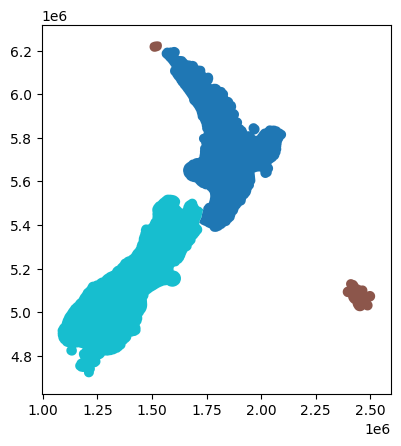

import pandas as pd
import numpy as np
import geopandas as gpd
import matplotlib.pyplot as plt
import pandas as pd
import mapclassify as mcpop23 = gpd.read_file('https://raw.githubusercontent.com/dataandcrowd/GISCI343/main/docs/Lecture5/data/pop23.gpkg')pop23.head(2)| REGC2023_V | REGC2023_1 | REGC2023_2 | VAR_1_1 | VAR_1_2 | VAR_1_3 | VAR_1_4 | VAR_1_5 | VAR_1_6 | VAR_1_7 | ... | VAR_1_39 | VAR_1_40 | AREA_SQ_KM | LAND_AREA_ | Shape_Leng | Island | geometry | centroid | distance_to_wellys | distance_to_wellys_km | |
|---|---|---|---|---|---|---|---|---|---|---|---|---|---|---|---|---|---|---|---|---|---|
| 0 | 13 | Canterbury Region | Canterbury Region | 448650 | 41910 | 12720 | 35847 | 4374 | 10236 | 539433 | ... | 8.6 | 8.6 | 56773.925695 | 44503.596192 | 1.543745e+06 | South | MULTIPOLYGON (((1662227.733 5360071.829, 16623... | POINT (1504471.265 5175113.443) | 398067.935743 | 398.07 |
| 1 | 15 | Southland Region | Southland Region | 79731 | 11607 | 1917 | 2841 | 315 | 2031 | 93342 | ... | 2.7 | 2.7 | 55237.978437 | 31218.954918 | 1.403398e+06 | South | MULTIPOLYGON (((1205425.608 5087372.120, 12055... | POINT (1192875.920 4894523.352) | 817370.466005 | 817.37 |
2 rows × 51 columns
pop23[['REGC2023_2']]pop23["centroid"] = pop23.centroidwellington = pop23[pop23["REGC2023_2"].str.contains("Wellington", case=False)]wellington_centroids = wellington.centroid.values[0]pop23["distance_to_wellys"] = pop23["centroid"].distance(wellington_centroids)
pop23["distance_to_wellys_km"] = round(pop23["distance_to_wellys"] / 1000, 2)
pop23[["centroid", "distance_to_wellys_km"]]# Create the figure/axes
fig, ax = plt.subplots(figsize=(8, 8))
# Plot
pop23.plot(
ax=ax,
column="VAR_1_23", # NEW: Specify the column to color polygons by
edgecolor="black",
linewidth=0.5,
legend=True,
legend_kwds=dict(loc="lower right", fontsize=10),
scheme="FisherJenks",
cmap="viridis"
)
# Format
ax.set_title("Fisher Jenks: k = 5")
ax.set_axis_off()
ax.set_aspect("equal")pop23.explore(
column="VAR_1_23", # Similar to plot(); specify the value column
cmap="viridis", # What color map do we want to use
tiles="CartoDB positron", # What basemap tiles do we want to use?
)dissolved = pop23.dissolve(by='Island').reset_index()dissolved.plot(column = 'Island')
pop23["area"] = pop23.areapop23['VAR_1_23']0 651027
1 100143
2 240900
3 33390
4 498771
5 194007
6 251412
7 334140
8 175074
9 49431
10 1656486
11 520971
12 57807
13 51135
14 126015
15 52584
16 633
Name: VAR_1_23, dtype: int64print(pop23[['VAR_1_23', 'area']].dtypes)VAR_1_23 int64
area float64
dtype: objectpop23['popden'] = pop23['VAR_1_23'] / pop23['area']pop23[['REGC2023_2', 'popden']]| REGC2023_2 | popden | |
|---|---|---|
| 0 | Canterbury Region | 0 |
| 1 | Southland Region | 0 |
| 2 | Otago Region | 0 |
| 3 | West Coast Region | 0 |
| 4 | Waikato Region | 0 |
| 5 | Northland Region | 0 |
| 6 | Manawatu-Whanganui Region | 0 |
| 7 | Bay of Plenty Region | 0 |
| 8 | Hawke's Bay Region | 0 |
| 9 | Marlborough Region | 0 |
| 10 | Auckland Region | 0 |
| 11 | Wellington Region | 0 |
| 12 | Tasman Region | 0 |
| 13 | Gisborne Region | 0 |
| 14 | Taranaki Region | 0 |
| 15 | Nelson Region | 0 |
| 16 | Area Outside Region | 0 |
pop23['popden_str'] = pop23['popden'].apply(lambda x: f'{x:.2f}')pop23| REGC2023_V | REGC2023_1 | REGC2023_2 | VAR_1_1 | VAR_1_2 | VAR_1_3 | VAR_1_4 | VAR_1_5 | VAR_1_6 | VAR_1_7 | ... | LAND_AREA_ | Shape_Leng | Island | geometry | centroid | distance_to_wellys | distance_to_wellys_km | area | popden | popden_str | |
|---|---|---|---|---|---|---|---|---|---|---|---|---|---|---|---|---|---|---|---|---|---|
| 0 | 13 | Canterbury Region | Canterbury Region | 448650 | 41910 | 12720 | 35847 | 4374 | 10236 | 539433 | ... | 44504 | 1543745 | South | MULTIPOLYGON (((1662227.733 5360071.829, 16623... | POINT (1504471.265 5175113.443) | 398068 | 398 | 56773926371 | 0 | 0.00 |
| 1 | 15 | Southland Region | Southland Region | 79731 | 11607 | 1917 | 2841 | 315 | 2031 | 93342 | ... | 31219 | 1403398 | South | MULTIPOLYGON (((1205425.608 5087372.120, 12055... | POINT (1192875.920 4894523.352) | 817370 | 817 | 55237980185 | 0 | 0.00 |
| 2 | 14 | Otago Region | Otago Region | 171618 | 14388 | 3933 | 10038 | 2043 | 4164 | 202470 | ... | 31186 | 1277273 | South | MULTIPOLYGON (((1333232.513 5127595.855, 13332... | POINT (1340957.562 4969400.688) | 658409 | 658 | 38514351821 | 0 | 0.00 |
| 3 | 12 | West Coast Region | West Coast Region | 27438 | 3171 | 315 | 678 | 117 | 837 | 32148 | ... | 23246 | 1582117 | South | MULTIPOLYGON (((1536071.582 5480250.380, 15361... | POINT (1413794.882 5265353.776) | 425872 | 426 | 36339586020 | 0 | 0.00 |
| 4 | 03 | Waikato Region | Waikato Region | 296097 | 83742 | 14700 | 26382 | 3561 | 6660 | 403641 | ... | 23901 | 1268420 | North | MULTIPOLYGON (((1871103.957 5970628.885, 18712... | POINT (1814673.939 5812794.911) | 374339 | 374 | 34888829346 | 0 | 0.00 |
| 5 | 01 | Northland Region | Northland Region | 105057 | 44931 | 4461 | 3927 | 555 | 2565 | 151689 | ... | 12507 | 811360 | North | MULTIPOLYGON (((1611941.312 6214121.225, 16133... | POINT (1666886.314 6089056.502) | 664465 | 664 | 30084271285 | 0 | 0.00 |
| 6 | 08 | Manawatū-Whanganui Region | Manawatu-Whanganui Region | 172101 | 43599 | 7341 | 10863 | 1335 | 4422 | 222672 | ... | 22221 | 1176417 | North | MULTIPOLYGON (((1821624.069 5738734.422, 18233... | POINT (1818513.179 5588762.382) | 150937 | 151 | 25322188258 | 0 | 0.00 |
| 7 | 04 | Bay of Plenty Region | Bay of Plenty Region | 189597 | 68943 | 7728 | 12963 | 1266 | 4407 | 267741 | ... | 12072 | 1093737 | North | MULTIPOLYGON (((1911825.034 5859943.054, 19127... | POINT (1939749.841 5798645.911) | 385165 | 385 | 21883740982 | 0 | 0.00 |
| 8 | 06 | Hawke's Bay Region | Hawke's Bay Region | 110940 | 34662 | 6270 | 5115 | 666 | 2763 | 151179 | ... | 14139 | 928781 | North | MULTIPOLYGON (((1959613.233 5721027.670, 19722... | POINT (1941378.454 5626939.482) | 233783 | 234 | 21444154085 | 0 | 0.00 |
| 9 | 18 | Marlborough Region | Marlborough Region | 37041 | 4776 | 969 | 1182 | 246 | 1044 | 43416 | ... | 10458 | 766970 | South | MULTIPOLYGON (((1729284.900 5448401.834, 17269... | POINT (1665073.201 5409294.375) | 140835 | 141 | 17688824208 | 0 | 0.00 |
| 10 | 02 | Auckland Region | Auckland Region | 789306 | 142770 | 194958 | 307230 | 24945 | 15639 | 1415550 | ... | 4941 | 660973 | North | MULTIPOLYGON (((1788533.265 6047342.800, 17891... | POINT (1767386.693 5956563.240) | 519130 | 519 | 16156208386 | 0 | 0.00 |
| 11 | 09 | Wellington Region | Wellington Region | 345180 | 58335 | 36105 | 47235 | 6576 | 8202 | 471315 | ... | 8049 | 579196 | North | MULTIPOLYGON (((1783549.090 5490093.710, 17835... | POINT (1802816.368 5438643.861) | 0 | 0 | 15945312433 | 0 | 0.00 |
| 12 | 16 | Tasman Region | Tasman Region | 42189 | 3441 | 480 | 885 | 138 | 1083 | 47157 | ... | 9616 | 759489 | South | MULTIPOLYGON (((1577851.023 5538769.586, 15785... | POINT (1577095.304 5442135.170) | 225748 | 226 | 14800254978 | 0 | 0.00 |
| 13 | 05 | Gisborne Region | Gisborne Region | 24504 | 19683 | 1542 | 975 | 159 | 624 | 43653 | ... | 8385 | 695919 | North | MULTIPOLYGON (((2063779.782 5855283.205, 20647... | POINT (2047929.399 5757742.163) | 402373 | 402 | 13989057264 | 0 | 0.00 |
| 14 | 07 | Taranaki Region | Taranaki Region | 89802 | 18150 | 1701 | 3594 | 447 | 2109 | 109608 | ... | 7255 | 564434 | North | MULTIPOLYGON (((1740534.387 5712954.039, 17405... | POINT (1710146.475 5644088.021) | 225377 | 225 | 12696953422 | 0 | 0.00 |
| 15 | 17 | Nelson Region | Nelson Region | 39717 | 4164 | 798 | 1956 | 210 | 945 | 46437 | ... | 422 | 170202 | South | MULTIPOLYGON (((1630452.435 5482785.080, 16384... | POINT (1633286.524 5448579.814) | 169821 | 170 | 1234785118 | 0 | 0.00 |
| 16 | 99 | Area Outside Region | Area Outside Region | 420 | 336 | 3 | 3 | 0 | 18 | 600 | ... | 799 | 664121 | Outside | MULTIPOLYGON (((2458453.245 5122375.615, 24595... | POINT (2319851.826 5233438.654) | 556269 | 556 | 15759496366 | 0 | 0.00 |
17 rows × 54 columns